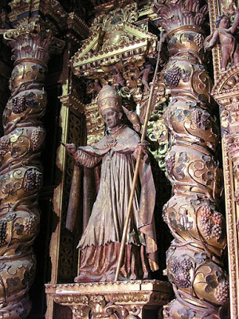
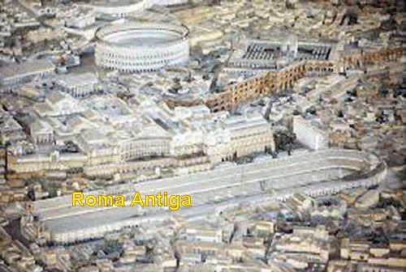
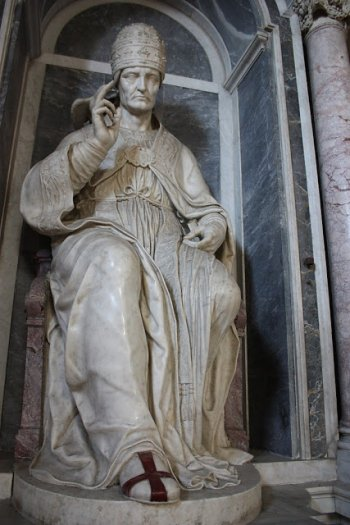
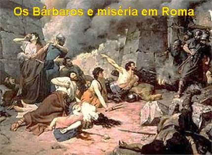
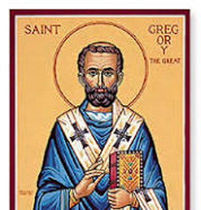
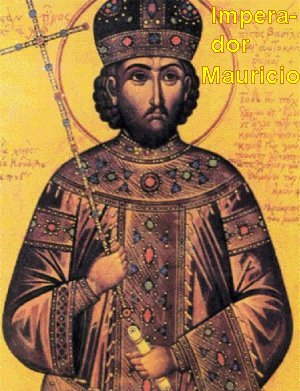
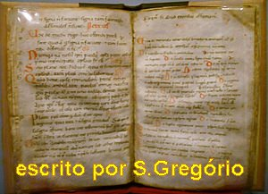
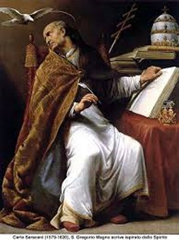

UM MAGNO PONTÍFICE
GREGORIUS ANICIUS O NOVO
PAPA
Naquele tempo, a eleição
do Pontífice era feita pelo Senado Romano, pelas autoridades do Clero e
o povo da
cidade de Roma, sendo confirmada pelos Bispos da
Sé Romana. E finalmente o Imperador do Grande Império, também devia
confirmar ou não a posse do escolhido.
Gregório já era por
demais conhecido, pois tinha sido Prefeito de Roma, realizou diversas missões em
benefício do povo e da Igreja, e atualmente era Abade do Mosteiro de Santo André
e Conselheiro do Papa falecido Pelágio II. Todos perceberam que para enfrentar
aquela situação calamitosa, era preciso um homem de qualidades e virtudes
excepcionais, como era o Abade Gregório. E por isso mesmo, a aclamação do seu
nome foi unânime.
Todavia, Gregório
recusou a indicação, com grande humildade, não se considerando capacitado assumir
um cargo de tamanha responsabilidade, principalmente agora, naquele momento
extremamente difícil que atravessava a cidade de Roma. Mas o povo e as
autoridades não aceitaram os seus argumentos e mantiveram a sua eleição.
Como a ratificação ou
não da eleição, dependia do parecer do Imperador Mauricio em Constantinopla,
e ele Gregório, quando esteve lá como Núncio Apostólico do Papa Pelágio II
cultivou fraterna amizade com o Imperador e sua família, inclusive batizou um
dos seus filhos, por isso lhe escreveu, pedindo para não ratificar a sua eleição.
Todavia, Germano o atual Prefeito da cidade de Roma, ficou sabendo da correspondência
e conseguiu interceptar a carta de Gregório, enviando no lugar dela, uma outra,
pedindo a confirmação do Papa escolhido, inclusive afirmando que a população
inteira havia sufragado o nome dele, pois confiavam na competência, no
espírito ativo e realizador, assim como na dignidade de Gregório.
Como a correspondência
demorava em face dos precários meios de comunicação e transporte, e considerando
as terríveis dificuldades e problemas que vivia a cidade, as autoridades lhe pediram
insistentemente para aceitar provisoriamente a indicação. Gregório aceitou
dirigir a Sé vacante, auxiliado por três altos oficiais, enquanto não chegasse a
resposta do Imperador, pois ele considerava que seria a seu favor, ou seja, que
Mauricio não ia ratificar a sua eleição, conforme ele mesmo havia pedido
por carta.
Assim combinado,
Gregório em primeiro lugar quis combater a peste, que continuava a matar muita
gente. Entretanto, como não havia meios materiais e remédios capazes de
enfrentar tão grave perigo, e como não existia outro recurso humano que pudesse
combater a epidemia, apelou para o recurso espiritual suplicando a misericórdia
infinita do SENHOR para curar o povo. Desse modo, com firmeza exortou todos os
romanos a fazerem penitência, reconhecendo que aquela epidemia de peste bubônica
bem que podia ser um castigo do Céu, merecido pelo povo, em face dos seus muitos
pecados. E por isso, convocou a população para uma grande procissão impetratória,
que deveria durar três dias, rezando e implorando a clemência do SENHOR DEUS
ONIPOTENTE pelos seus pecados, e pedindo o fim da peste.
Combinaram sair em procissão
de cada uma das sete regiões da cidade, e reunindo-se todas na BASÍLICA DE SANTA MARIA MAGGIORE
(Basílica de SANTA MARIA a Maior). Foi um acontecimento monumental,
pois foi a primeira vez que os Mosteiros com seus Abades acompanhados dos seus Monges e todas
religiosas e o povo, participaram de uma procissão. Rezando e com muita fé, todas
as sete procissões se reuniram na BASÍLICA DE NOSSA SENHORA, e a seguir, saíram
unidos numa imensa e única procissão pela cidade, cantando musicas religiosas e
rezando com fé e alegria, com a participação de todos. Ao chegar a Ponte em frente
ao mausoléu do Imperador Adriano, pararam atônitos e jubilosos: "ouviram-se coros angélicos que cantavam maravilhosamente".
Todos ficaram admirados e cheios de surpresa silenciaram
para ouvir. E os Anjos cantavam com voz forte e bonita: “Rainha dos Céus, alegrai-Vos, aleluia. Porque
AQUELE que Merecestes Portar; Aleluia. Ressuscitou como disse, Aleluia”.
BASÍLICA DE SANTA MARIA MAGGIORE
(Basílica de SANTA MARIA a Maior). Foi um acontecimento monumental,
pois foi a primeira vez que os Mosteiros com seus Abades acompanhados dos seus Monges e todas
religiosas e o povo, participaram de uma procissão. Rezando e com muita fé, todas
as sete procissões se reuniram na BASÍLICA DE NOSSA SENHORA, e a seguir, saíram
unidos numa imensa e única procissão pela cidade, cantando musicas religiosas e
rezando com fé e alegria, com a participação de todos. Ao chegar a Ponte em frente
ao mausoléu do Imperador Adriano, pararam atônitos e jubilosos: "ouviram-se coros angélicos que cantavam maravilhosamente".
Todos ficaram admirados e cheios de surpresa silenciaram
para ouvir. E os Anjos cantavam com voz forte e bonita: “Rainha dos Céus, alegrai-Vos, aleluia. Porque
AQUELE que Merecestes Portar; Aleluia. Ressuscitou como disse, Aleluia”.
O povo rejubilando
de alegria, ajoelhou-se. São Gregório, com os olhos cheios de lágrimas, olhando
para o Céu, disse: “Ora pro
nobis DEUM”(Rogai por nós
SENHOR DEUS). E todos viram no alto
do mausoléu do Imperador Adriano, situado na extremidade da ponte, o Arcanjo São Miguel,
com toda a sua brilhante grandeza embainhando a sua espada, indicando com aquele gesto,
que a praga havia cessado. A memória deste fato magnífico e extraordinário, foi preservada,
sendo aquele monumento transformado em memorial do acontecimento e ficou com o nome de
“Santo Angelo” (Santo Anjo), sendo transformado em fortaleza
“Castel Sant’Angelo”. Na parte superior do
monumento colocaram uma linda imagem do
“Arcanjo São Miguel”, em homenagem
ao Grande Arcanjo, que a serviço do SENHOR DEUS, fez a peste desaparecer de Roma.
CHEGOU A CORRESPONDÊNCIA
DA ÁSIA
O Imperador Mauricio
não recebeu a carta de Gregório pedindo-lhe para não ser ratificado como Papa, porque

como já mencionamos, a carta foi interceptada por Germano Prefeito de Roma. E
Germano, escreveu ao Imperador falando das excelentes qualidades de Gregório e
pedindo que ele fosse ratificado como Sumo Pontífice. Mauricio diante daquela
clara e evidente indicação, ele que também era amigo de Gregório,
na qualidade de Imperador do Grande Império Romano não pensou duas vezes,
enviou o documento imperial ratificando a eleição do novo Papa.
Quando Gregório
recebeu a documentação oficial vinda de Constantinopla, tomou um susto, pois já
haviam decorridos 6 meses, e ele imaginava que o Imperador não ia confirmar
a sua eleição como Papa, mas isto não aconteceu, pelos motivos já
esclarecidos.
Gregório ficou atemorizado
com a notícia, e logo se ocultou numa floresta próxima. Entretanto os amigos que conheciam
os seus hábitos o encontraram e, ele humildemente, depois arrependido por ter
fugido, aceitou a indicação, compreendendo que aquela era a Vontade de DEUS. Foi
conduzido pelas autoridades à Basílica de São Pedro, sendo consagrado Bispo, e
logo em seguida, entronizado como Papa, no dia 3 de Setembro de 590, adotando o
nome de Papa Gregório I, com a idade provável de 50 anos. Isto aconteceu na
mesma época em que o Imperador Maurício, em Constantinopla, comemorava o quinto
ano de reinado.
Embora o novo Pontífice
fosse um homem trabalhador e decidido, tinha uma saúde precária, sofrendo diariamente
de má digestão, o que às vezes lhe ocasionava sintomas de febre. Nos anos finais da
sua existência foi “vítima
da gota”.
Entretanto, ao longo
do seu pontificado demonstrou ser um homem de ferro, com uma invejável energia e uma
disposição de jovem, juntando uma imensa coragem que possuía, em defesa
intransigente dos interesses e do amor de DEUS. Mas era também uma pessoa meiga,
de profunda humildade com uma simpatia maravilhosa que cativava a todos no
contato diário, e que, sobretudo, ajudava a impor o seu pensamento correto e
decidido. Tinha o dom de saber fazer amigos, sua simpatia unida a sua humildade
o ajudava a ser caridoso, sinceramente afável, paciente e sem qualquer tipo de
arrogância. E através das correspondências ficava manifesta a confiança que os
amigos depositavam nele, bem como a solicitude, a fidelidade e a grande afeição
que Gregório lhes dedicava.
ENÉRGICO
E DETERMINADO
Na verdade, ele sempre
gostou de exercitar a contemplação, mas não era um homem que ficava paralisado, sem
fazer nada, plantado num canto, ou escondido do mundo. Desde o primeiro dia como Sumo
Pontífice, revelou muita energia e determinação, sendo forçado no segundo mês de
pontificado, a tomar uma medida enérgica depondo o Arquidiácono Laurentius, que era
o primeiro dos clérigos de Roma. E fez isto, depois de uma séria advertência numa
primeira convocação disciplinar, objetivando corrigir o seu abominável orgulho e
crimes cometidos. Mas, que não resultaram em nada por parte dele, ou seja, em
nenhuma mudança de comportamento. Então o Papa decidiu pela deposição, e preferiu,
todavia, ocultar os tipos de crimes praticados por ele. E este procedimento
serviu de exemplo para todo o clero, sinalizando que o Papa não ia tolerar
nenhum tipo de abuso ou de indisciplina.
CORRIGINDO ABUSOS

Foi assim que em Julho
do ano 595, realizou o primeiro Sínodo no Vaticano, restringido a frequência aos Titulares
e aos Padres das Igrejas de Roma, onde foram aprovados seis decretos que tratavam da
disciplina eclesiástica. Eram decretos amplos que focalizavam diversos tipos de
abusos e práticas que não eram recomendadas e inconvenientes ao clero.
Uma das práticas
evidenciadas e condenadas referia-se a escolha dos Diáconos, que eram preferidos pela
sua bela voz e bonita aparência exterior, do que por sua piedade, por sua conduta
exemplar e empenho em servir a Igreja. Por essa razão, para manterem a voz
sempre bonita, dedicavam-se mais aos ensaios de canto, do que ao cumprimento de
suas missões específicas, instruindo o povo e atendendo aos necessitados.
Outro abuso sério
que o Papa procurou corrigir, foi à incrível prática da gorjeta ou gratificação por
serviços prestados, que se tinha tornado comum em todos os níveis do governo
imperial e ameaçava contaminar a Cúria Pontifícia, evitando assim até a mínima
aparência de simonia (comércio de coisas sagradas e espirituais) e venalidade.
Evidentemente, só era
permitida a doação espontânea, sem qualquer obrigação e sem nenhum tipo de exigência.
A relação do que era permitido e aquilo que não era, é uma relação longa e muito
bem elaborada, com o objetivo certo de coibir qualquer
tipo de abuso, por menor que fosse.
NO INICIO DO
PONTIFICADO
Quando Gregório tornou-se
Papa em 590, A Itália encontrava-se em ruínas. Os lombardos já controlavam a maior

parte da península e seus constantes ataques praticamente paralisaram a economia.
Naquele momento, eles estavam acampados à frente dos portões de Roma e a cidade
estava lotada com refugiados de todos os tipos, vivendo nas ruas sem nenhuma condição
de saúde ou alimentação. A sede do governo, que havia sido transferida para
Constantinopla, estava muito distante e parecia incapaz de aliviar o sofrimento da
população local. Diversos Papas enviaram emissários pedindo ajuda, inclusive
Gregório, mas sem resultado efetivo.
O recém-eleito, Gregório
redirecionou os recursos da Igreja para conseguir administrar as ações de ajuda. Ao
fazê-lo, demonstrou tanto o seu notável talento quanto a sua compreensão intuitiva
dos princípios de contabilidade, que só seria inventada séculos depois. Ele passou
a exigir agressivamente que seus clérigos fossem atrás das pessoas que precisavam
de ajuda, e repreendia os sacerdotes, quando percebia que não estavam fazendo isso.
A Igreja possuía entre
3.500 a 4.500 quilômetros quadrados de terras cultiváveis gerando receitas que eram
divididas em blocos denominados
"patrimonia". Produziam
de tudo para serem vendidos, mas Gregório interveio e ordenou que toda a produção
fosse enviada a Roma para ser distribuída às sete “diaconias”.
Ordenou que também aumentassem a produção, criando uma estrutura administrativa de controle
a fim da ordem ser cumprida. Desse modo, cereais, vinho, queijo, carne, peixes e azeite
chegavam a Roma em grandes quantidades e tudo era doado na forma de esmola.
Para facilitar a distribuição,
Gregório criou um vigoroso exército de voluntários e a distribuição era feita mensalmente.
Para os doentes, os Monges levavam diariamente a comida quentinha e saborosa, os quais
sempre sorriam muito satisfeitos. Naquela época difícil, até as famílias ricas eram
necessitadas, pois não conseguiam comprar alimentos. Gregório enviava refeições que
ele mesmo preparava na forma de presentes, preservando-os de ficar envergonhados
de receber a caridade.
BOM RELACIONAMENTO
ECLESIÁSTICO E SECULAR
O Papa sempre quis que
a Igreja e o Governo Imperial, centralizado em Constantinopla tivessem um relacionamento
adequado e cooperativo, ajudando um ao outro mutuamente para o bem de ambos, de
modo que um completasse as necessidades do outro, embora permanecessem os dois
poderes, absolutamente soberanos, distintos e independentes. Mas estas relações,
infelizmente, eram muitas vezes tornadas mais espinhosas pelo comportamento
inadequado de funcionários imperiais na Itália, que excediam em exigências
burocráticas, muitas vezes inclusive, para conseguir vantagens em proveito
próprio.
OS LOMBARDOS
E A RELIGIÃO

Quando
Gregório assumiu a cadeira de São Pedro, a Península Italiana estava sob o controle
dos hereges lombardos, que colocavam todas as dificuldades para a difusão da religião
Católica. De maneira nenhuma permitiam que seus filhos fossem catequizados
e que se tornassem cristãos sendo Batizados na fé Católica. Eles eram hereges
arianos. E por isso, centenas de ocorrências exigiam a pronta e eficaz reação do
Papa, que na maioria das vezes alcançava uma solução provisória, contudo, sem
resolver o problema, em face da presente ocupação territorial pelos invasores
lombardos. Mas na continuidade dos meses, o Papa insistia na catequese da
população, e houve uma certa acomodação, os
invasores se tornaram menos agressivos.
A CONVERSÃO
DA INGLATERRA
A providência de
Gregório de enviar Monges a Inglaterra, foi inspirada e transformou o país numa
“Ilha de Santos”. Por essa razão, São Gregório é considerado como
um Apóstolo da Grã-Bretanha. É bem verdade que no ano 314, o Concílio de Arles já havia
autorizado o envio de três Bispos à Inglaterra para converter o país. Todavia,
na sequência dos anos, os ingleses retornaram ao paganismo, quando aconteceu
a invasão anglo-saxão, no ano de 428. Por esse motivo, a iniciativa de
Gregório foi mais concreta e eficaz.
Inicialmente ele pensou
em comprar jovens escravos ingleses na faixa etária de 17 a 18 anos, para instruí-los na
doutrina Católica e depois, ordená-los Sacerdotes. E a seguir, eles retornariam ao
seu país como missionários. E com este objetivo, iniciou um conjunto de
providências objetivando angariar fundos para a compra dos jovens no mercado.
Todavia, nesta mesma época,
surgiram fortes rumores em Roma, de que os pagãos na Bretanha estavam dispostos a
se tornarem cristãos, se existissem professores para instruí-los.
Esta notícia encorajou Gregório, que no ano 596, escolheu 40 Monges do seu
Mosteiro de Santo André, e criou uma missão chamada "Missão Gregoriana" chefiada por
Agostinho de Cantuária, Prior do Mosteiro de Santo André, o qual, tinha por objetivo evangelizar os
anglo-saxões das ilhas britânicas. A missão teve grande sucesso e foi de onde os missionários depois
partiram para cristianizar os territórios modernos dos Países Baixos e também a Alemanha. A pregação
da fé Católica e a eliminação de quaisquer desvios era um dos elementos-chave da visão de Gregório
e parte importante da política do seu pontificado.
No inicio encontraram
desânimo, boatos perturbadores de que a situação na Inglaterra era deplorável, além de
muitos outros desabonadores rumores. Pensaram em voltar. Mas o Papa Gregório
escreveu firme, inspirando os seus Monges e os animando para a preciosa missão.
Entre outras recomendações a carta dizia: “... Não destrua os templos pagãos, mas os purifica e consagra ao
verdadeiro DEUS; não acabe bruscamente com certos costumes dos gentios, mesmo
que os costumes não fossem muito louváveis. Desde que não fossem também
absolutamente incompatíveis com a religião Católica. Fizessem vistas grossas
e passassem por cima, até que essa nova planta estivesse forte e capaz de abraçar
inteiramente todo o rigor da disciplina eclesiástica cristã”.
Outro fato que ajudou
na evangelização da Inglaterra foi à conversão do Rei Etelberto. Jovem inteligente,
que em menos de 20 anos de reinado, estabeleceu um imenso domínio, abrangendo
grande parte da Inglaterra, Irlanda e Pais de Gales. Seu prestigio atravessou
fronteiras, o que levou Cariberto, Rei de Paris, lhe oferecer sua filha Berta em
casamento. Entretanto, como Cariberto era cristão exigiu que sua filha tivesse o
pleno e livre exercício da Religião Católica. Ele concordou. Mais tarde, o
próprio Etelberto foi convertido ao Cristianismo e foi Batizado. O exemplo do
Rei foi seguido por muitos súditos, de modo que no dia de Natal do ano 597,
milhares de pessoas receberam o Batismo em todo reino inglês.
FINAL TRÁGICO
PARA O IMPERADOR EM BIZÂNCIO
O imenso Império Romano
continuava estendendo seu poderio da Europa até a Ásia. Entretanto, o Imperador
Mauricio
continuava não se revelando um sábio administrador, isto não só com as
providências além mar, como no caso da Itália que ele não protegeu como devia,
enviando tropas para combater os lombardos, mas também em muitas ocorrências
internas. Em 599 recusou pagar um resgate aos bárbaros, para liberar 12 mil
soldados romanos que estavam prisioneiros dos bárbaros. Em consequência, os bárbaros
mataram todos. Quando ele, o Imperador se arrependeu, já era tarde, o massacre
já tinha acontecido.
No ano de 602 teve
outra decisão equivocada. Em face da administração ter apresentado um volume de
despesas grande, acima do que ele e seus administradores calculavam, para
equilibrar o orçamento, mandou cortar os subsídios das tropas militares,
determinando que elas deviam se manter e sustentar, do butim que conseguissem
pilhar nos países inimigos que entrassem. E isso em pleno inverno! As
consequências foram violentas. Como as famílias dos militares poderiam viver?
Começaram com passeatas e arruaças na capital do Império, e depois com muita decisão,
sob o comando do Militar Focas depuseram o Imperador. Todo exército aclamou
Focas, um soldado ignorante e de poucos conhecimentos administrativos,
elegendo-o Imperador. Foi o pior Imperador que existiu!
Mauricio teve que
fugir com a mulher e os filhos. Mas foi alcançado na Macedônia, e os revoltosos
mataram o Imperador e toda a sua família.
AS IRMÃ S
RELIGIOSAS NAS ÉPOCAS DIFÍCEIS
Na época do Papa
Gregório, naquela Roma destruída pelos invasores lombardos, cheia de famintos,
enfermos e refugiados, havia aproximadamente 3 mil religiosas de clausura, que
por certo passavam todos os tipos de necessidades, inclusive fome e frio. E o
Sumo Pontífice se entristecia e utilizava todos os recursos possíveis, para
suprir os Mosteiros e não permitir que nada faltasse as religiosas. Ele tinha
tanta estima as religiosas que se manifestava assim: “Sua vida é tal e tão submetida a lágrimas e abstinência que,
se elas não se interpusessem (com orações e sacrifícios), nenhum de nós
teria podido sobreviver durante tantos anos neste lugar entre as espadas dos
lombardos”.

A LITURGIA – O CANTO GREGORIANO
Ele fez diversas
alterações na Liturgia Romana, mais a titulo de acréscimos:
a)Organizou a parte
principal das leituras (da Sagrada Escritura) e das orações da Santa Missa.
b)Ordenou que
o PAI NOSSO fosse recitado no Cânon (leituras sagradas), antes de partir a Sagrada Hóstia.
c)Introduziu
o hábito de ser rezado ou cantado o Kyrie Eleison [SENHOR tem piedade, (ato
penitencial ao PAI ETERNO)], na Santa Missa.
d)Estabeleceu
que o Aleluia fosse cantado ou rezado, depois do Gradual (antes do Evangelho),
mesmo fora do período Pascal.
e)Proibiu o uso
da Casula pelos subdiáconos, e aos diáconos, de participar de qualquer parte musical
da Santa Missa, a não ser o Cântico do Evangelho.
f) Instituiu as Estações da VIA SACRA.
É possível que ele
tenha alterado ou melhorado outros pontos menores, mas não é possível
estabelecer com certeza quais foram.
Também são atribuídas
a ele certos hinos Litúrgicos, o
“Sacramentário Gregoriano”, isto é,
o Missal e o Ritual da Igreja Romana que ele reformou. Toda a Reforma Litúrgica de
Gregório está descrita no “Livro dos Sacramentos”.
Por outro lado, por
motivo do seu grande empenho pelo
“Canto Litúrgico”, lhe é atribuído
um “Antifonário e Responsório”.
Gregório considerava que
a música sagrada não era apenas um acessório para embelezar a oração, mas uma
parte integrante da própria oração.
No ano 600, o Papa
Gregório ordenou que fossem copiados os escritos dos cânticos ou hinos cristãos
primitivos (conhecidos como Antífonas, Salmos ou Hinos). Tais liturgias de
louvor a DEUS eram celebradas nas antigas catacumbas de Roma já no ano 52 dC,
iniciadas por Simão Pedro.
Atualmente no
frontispício da edição Vaticana do Canto Gregoriano, vem escrita a lenda de sua
origem: “O muito Santo
Gregório derramava-se em preces para que o SENHOR lhe concedesse a música a
colocar nos textos litúrgicos. O ESPÍRITO SANTO desceu então sobre ele sob a
forma de uma pomba, e seu coração foi esclarecido. Ele começou imediatamente a
cantar.”
Para perpetuar o
canto, o Papa fez construir duas casas, uma próxima a Basílica de São João de
Latrão e a outra próxima ao Vaticano, para instruir os clérigos e
meninos que cantavam na Igreja.
Assim, o nome do
grande Pontífice ficou ligado ao canto religioso, conhecido por todos como
“Canto Gregoriano”.
ESCRITOR ADMIRÁVEL E
MESTRE DE ESPIRITUALIDADE
Ele escreveu muito,
bem mais do que se pode imaginar, e isto apesar dos seus compromissos e
obrigações que diariamente absorvia a sua atenção e lhe causava as muitas
preocupações. Excetuando apenas o Papa Bento XIV, Gregório foi o Papa que mais
Obras escreveu. Tinha uma inteligência privilegiada e uma vasta cultura, que
ampliou profundamente os seus conhecimentos. Seus escritos e suas pregações o
levou a ser considerado como um grande Mestre de Espiritualidade, no mesmo grau
de Santo Agostinho de Hipona e São Bernardo de Claraval.
As Obras de Gregório
como teólogo e doutor da Igreja são importantes, não por abrir novos caminhos e
novas soluções para velhos problemas, mas primordialmente na sumarização dos
ensinamentos dos antigos Padres da Igreja, que ele os consolidava com mais opções de
argumentos, num conjunto totalmente harmonioso. Foi por essa razão que os seus
escritos se tornaram um verdadeiro “Compêndio de Teologia” da Idade Média.
Suas principais Obras
foram:
1 –
Moralium Libri XXXV, também denominado Magna Morália.
2 –
Homiliarum in Evangelia Libri II.
3 –
Homiliarum in Ezechielem Prophetam Libri II.
4 –
Diálogos ou De Vita et Miraculis Patrum
Italicorum et de aeternitate animarum.
5 –
Regulae Pastoralis Liber (Regra para Pastores).
6 –
Epistolarum Libri XIV.
E muitas outras Obras.

 PRÓXIMA PÁGINA
PRÓXIMA PÁGINA
PÁGINA ANTERIOR
RETORNA AO ÍNDICE